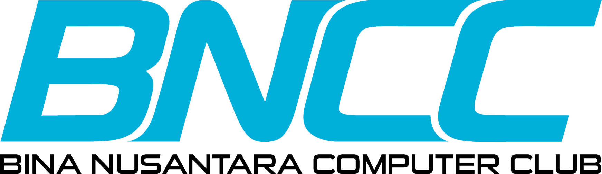

Bina Nusantara Computer Club
Bina Nusantara Computer Club (BNCC) is the oldest computer-based organization at BINUS Universit. BNCC represents a prominent tech-focused student organization at Binus University, aimed at developing students' skills in information technology and digital innovation.
Keluarga Mahasiswa Buddhis Dhammavaddhana
KMB Dhammavaddhana (KMBD) is a Buddhist student community at BINUS University. KMBD provides a space for students to learn about and practice Buddhist teachings, engage in community service and social activities.